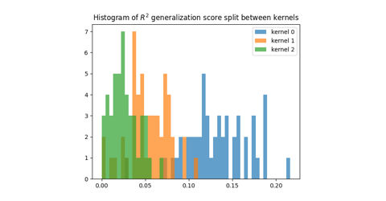
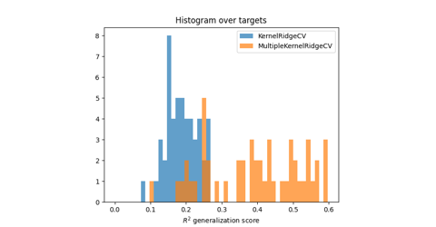
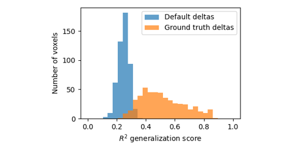
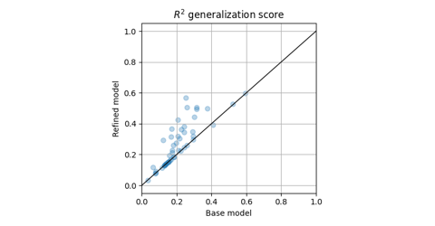

Gallery of examples¶
Kernel ridge¶


Multiple-kernel ridge¶

Multiple-kernel ridge

Multiple-kernel ridge with scikit-learn API
Multiple-kernel ridge with scikit-learn API



Multiple-kernel ridge fit from fixed hyper-parameters
Multiple-kernel ridge fit from fixed hyper-parameters

Multiple-kernel ridge refining
Multiple-kernel ridge refining